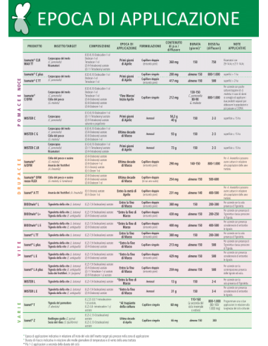

Home / Agricoltura professionale / BIOGARD

BIOGARD · Disponibile
BIOGARD ISOMATE A/OFM – 200 diffusori
74,50 €
IVA inclusa · prezzo più basso degli ultimi 30 giorni: 74,50 €
Aggiungi al carrello- Spedizione gratuita da 99 €, parte entro 24/48 ore lavorative dal pagamento
- Paghi con carta, PayPal (anche in 3 rate) o bonifico
- Dubbi su dosi e tempi? Agronomo su WhatsApp
Patentino obbligatorio: allega il certificato di abilitazione all’acquisto in fase d’ordine. Da usare solo per gli usi e alle condizioni riportate in etichetta.
Diffusori a feromoni per la confusione sessuale contro tignola orientale del pesco e anarsia dei fruttiferi, in un’unica applicazione.
Due tubi in polimero pieni di feromone da appendere alle parti legnose, lontano dal sole diretto. Una sola applicazione copre l’intero periodo di volo.
Va messo prima delle catture della prima generazione e affiancato a monitoraggio e difesa. Approvato FiBL per l’agricoltura biologica in Italia.
| Marca | BIOGARD |
|---|---|
| Confezione | 200 diffusori (cartone da 3.600) |
| Insetti | Grapholita molesta, Anarsia lineatella |
| Colture | Frutteti, in particolare pesco |
| Composizione | 5 componenti feromonici; min. 290 mg per diffusore |
| Carenza | Non richiesta |
| Conservazione | In frigorifero a 5 °C, fino a 3 anni |
| Riferimento | 0200144 · EAN 8050539000134 |
Qui le recensioni dei clienti (da collegare: oggi la sezione recensioni della scheda è vuota)